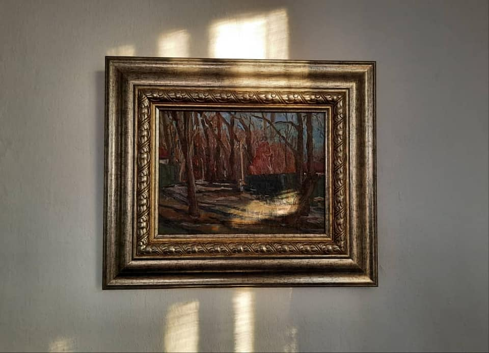

{% extends 'main/base.html' %}
{% block title %}
about
{% endblock %}
{% block content %}

Первый этюд маслом
"Мой первый этюд маслом.
В художественном училище было обязательным сначала писать акварелью, и только после полугодия разрешали пользоваться масляными красками. Так давали возможность овладеть техникой акварели.
Тихие улочки возле Ошского базара, точнее, тогда все говорили Пивзавода, хотя рынок назывался Ала-Арчинский. Сюда мы привозили продавать свои яблоки.
Общежитие, где я жил, находилось на Киевской-Темирязева, и мне было удобно приходить в этот район писать с натуры, к тому же эти места было принято считать нашими. Отсюда уезжал небезызвестный автобус "Пивзавод - Кирова - Маловодное".
Я почти заканчивал этюд, когда увидел идущих в мою сторону кировских ребят. Аскера узнал сразу, он выделялся среди них ростом, был старше меня на 3-4 года и славился своим гонором. Обычно, в таких местах распивали спиртные напитки. И я стал беспокоиться, что сейчас будут приставать, заставлять пить. Мало кто знал, что я совсем не пьющий (надо уточнить, когда-то был, а то после "Свет аке" неудобно категорично заявлять). В незнакомых компаниях, чтобы заставить тебя выпить, в ход пускали все, даже оскорбления и унижения, как ни странно, это считалось хорошим тоном гостеприимства. Мы поздоровались, буквально на мгновения они наблюдали за мной и, как я предполагал, начали пить водку. Одна тара на всех, стакан был спрятан в кустах и водка пошла по кругу, первая миновала меня, потом вторая... Закуска была отменная: Аскер, вроде, работал в Пишпеке на продовольственном складе. К моему удивлению, так и ушли, не предложив мне выпить, даже отведать, как было принято, кусочек хлеба. Было ужасно обидно, они со мной обошлись, как с последним человеком.
С годами, я все чаще стал принимать участие в разного рода мероприятиях сельчан. Буквально недавно встретил Аскера и рассказал ему тот случай, он, оказывается, все помнит и спокойно мне говорит: "Да мы тебе не хотели мешать..."
{% endblock %}